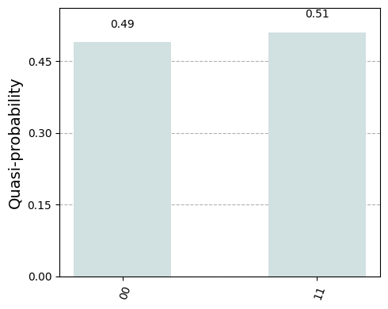

Quantum circuit evaluation¶
Single circuit evaluation¶
Basic quantum circuit execution follows the regular Qiskit workflow. A quantum circuit is defined by a QuantumCircuit instance:
circuit = qiskit.QuantumCircuit(2)
circuit.h(0)
circuit.cx(0, 1)
circuit.measure_all()
Warning
AQT backends currently require a single projective measurement as last operation in a circuit. The hardware implementation always targets all the qubits in the quantum register, even if the circuit defines a partial measurement.
Prior to execution circuits must be transpiled to only use gates supported by the selected backend. The transpiler’s entry point is the qiskit.transpile function. See Quantum circuit transpilation for more information.
The run method of all AQT backends submits the circuit for execution on a backend and immediately returns the corresponding job handle:
transpiled_circuit = qiskit.transpile(circuit, backend)
job = backend.run(transpiled_circuit)
Each type of resource (cloud, direct access, or offline simulator) has a corresponding job class, all of which implement the JobV1 interface. The returned job handle can be used to monitor the execution and retrieve results once the job completes.
The result method blocks until the job completes, whether successfully or not. The return type is a standard Qiskit Result instance:
result = job.result()
if result.success:
print(result.get_counts())
else:
raise RuntimeError
Multiple options can be passed to run that influence the backend behavior. See the reference documentation of the ResourceRunOptions class for a complete list.
Batch circuits evaluation¶
The resource’s run method can also be given a list of quantum circuits to execute as a batch. The returned JobV1 is a handle for all the circuit executions.
Note
Displaying job progress with a progress bar - as was possible in the v1 provider - is not (yet) supported by the v2 provider.
The result of a batch job is also a standard Qiskit Result instance. The success marker is true if and only if all individual circuits were successfully executed:
result = job.result()
if result.success:
print(result.get_counts())
else:
raise RuntimeError
Attention
In a batch job, the execution order of circuits is not guaranteed. In the Result instance, however, results are listed in submission order.
Job handle persistence¶
Important
Job persistence is not currently supported by the v2 provider.
Using Qiskit primitives¶
Circuit evaluation can also be performed using Qiskit primitives through their specialized implementations for AQT backends AQTSampler and AQTEstimator. These classes expose the BaseSamplerV2 and BaseEstimatorV2 interfaces respectively.
Warning
The generic implementations BackendSampler and BackendEstimator are not compatible with backends retrieved from the AQTProvider. Please use the specialized implementations AQTSampler and AQTEstimator instead.
For example, the AQTSampler can evaluate bitstring quasi-probabilities for a given circuit. Using the Bell state circuit defined above, we see that the states \(|00\rangle\) and \(|11\rangle\) roughly have the same quasi-probability:
from qiskit.visualization import plot_distribution
from qiskit_aqt_provider.primitives import AQTSampler
sampler = AQTSampler(backend=backend)
result = sampler.run([circuit], shots=200).result()
counts = result[0].data.meas.get_counts()
plot_distribution(counts, figsize=(5, 4), color="#d1e0e0")

In this Bell state, the expectation value of the \(\sigma_z\otimes\sigma_z\) operator is \(1\). This expectation value can be evaluated by applying the AQTEstimator:
from qiskit.quantum_info import SparsePauliOp
from qiskit_aqt_provider.primitives import AQTEstimator
estimator = AQTEstimator(backend=backend)
bell_circuit = QuantumCircuit(2)
bell_circuit.h(0)
bell_circuit.cx(0, 1)
observable = SparsePauliOp.from_list([("ZZ", 1)])
result = estimator.run([(bell_circuit, observable)], precision=0.1).result()
print(result[0].data.evs)
1.0
Tip
The circuit passed to estimator’s run method is used to prepare the state the observable is evaluated in. Therefore, it must not contain unconditional measurement operations.